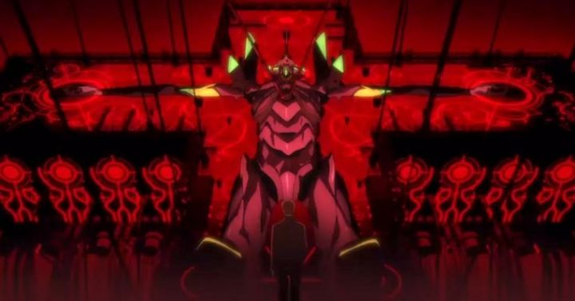

Disclaimer: This is a review of "Evangelion 3.0 + 1.01," the slightly updated version of "3.0 + 1.0," as released internationally on Amazone Prime Video.Disclaimer: Spoilers for previous entries in the "Evangelion" franchise. No explicit spoilers for "3.0 + 1.0."... 9 years.9. Long. Years.That's how long Japanese fans have waited between the confusing third entry in the "Rebuild of Evangelion" tetraology film series, and this fourth, and final movie: "Evangelion 3.0 + 1.0 - Thrice Upon A Time." In America, I first saw that third movie a year or two later, in a theater, before a dispute required Funimation to redo the English dub for home video a couple years later. Even then, that's a long wait. Not to mention if you've been following this series since the first movie from 2007, like I have, by accident as a new anime fan. I still remember reports of Studio Khara's plan to release the movies every 2 years or so, or even to release the last 2 movies back-to-back. This should have finished in 2013. And here we are, in 2021.Why did it take so long? Director Hideaki Anno had a lot of excuses to pause production and focus on other things, whether it was working on completely different movies, or simply taking a break. Possibly depression or exhaustion, I'd credit it mostly to the shear pressure of redoing a cult classic, the thing that made Anno a household name in otaku-culture. He already had trouble with his intended ending and fan expectations two decades ago. He already tried to redo it. This was his third time to convey a conclusion. Would it be worth all the effort? At some point, fans might have given up seeing this final "4.0" movie at all: I was shocked to see reports as late as 2018 of the studio "hiring" workers for initial production, as if no one truly touched the idea of making it for that whole time. And when it finally did seem real, with trailers and a release date for 2020, even the world itself seemed to stand in the way. COVID-19 affected production and plans for a theatrical release. It was delayed to 2021, when it was just barely safe enough for Japanese theaters to reopen to sell a franchise-record of tickets, and ultimately put on Amazon Prime Video for a worldwide release. Amazon seems the popular choice for Japanese studios that want to own and control their release overseas, but now makes the fifth studio to handle the franchise in North America, on top of ADV, Funimation, Netflix, and an upcoming GKIDS series release. What a mess.Regardless, it's here now. To help ensure the movie was real, the first ten minutes was even streamed for free a year early as a teaser. I don't know what fans were expecting: I saw a lot of complaints of it "just being another boring action scene." Clearly, these were either not fans, or had grown too cynical as their patience wore thin. For one thing, it's a great acton scene (in a franchise that is primarily "action science fiction"), featuring Eva pilot Mari against an Angel in a red abyss where Paris, France used to be. Second, it ends with success, and Paris is restored to its "2.0" movie state, the blood smog gone, suddenly with color and looking habitable. What an incredible realization and teaser: in a series that tended to conclude with the end of the world, this movie starts by daring the viewer to hope. Maybe the world can be saved this time. And that's probably the biggest change compared to the previous endings for the story. "3.0 + 1.0" isn't a feel-good movie all the way through, but from the beginning, it wants to be a message of hope. After leaving our three lead pilots, including a traumatized Shinji, stranded to walk across abandoned cities at the end of "3.33," the story could have gone literally anywhere. It was impossible to know what to expect. And it chooses to take time revealing the positive aspects of human life as it still exists, probably existing more than you'd think from the previous movie, before starting up the action again, and reaching it's conclusion, a cruel angel's thesis about the point of it all. Even though the Rebuild movies have now diverged quite a bit from the series, the conclusion isn't some drastic new revelation in terms of difference. Previously, we've seen director Anno use pencil sketches and storyboard panels in the final animation, a ton of newly made-up technical sci-fi jargon to please obsessed nerds, sccenes of violence to shock, messages to chear up Shinji, messages to demean him and his flawed soul, and even live-action footage a-la museum-art-experiment to make clear that the message is meant for YOU, not just these fictional characters. Anno uses ALL of these techniques again in "3.0 + 1.0." Right away, it does indeed tie as far back to the characters and stories in "1.0," feeling like a necessary resolution to elements we assumed were gone after the drastic and purposely confusing time-jump of the last movie. And as the title and fan-theories had suggested, the story fines a way to tie this conclusion to the entire franchise, including the original TV series, sometimes in a rather literal, dumbfounded way. And it ends, much like how Anno originally tried to end it, with a message of hope, from the growth of Shinji Ikari as a human being.It's interesting to witness, but it is all very familiar. But what else could you expect? This isn't some brand new revelation from a modern day prophet, but an artist trying yet again to convey something as intended, after trying multiple times already. It keeps what worked, what didn't, and some new minor things to experiment with. It's a refined version of the ending. And when nitpicking everything, it might be the best one. I appreciated the alternative presented here rather than treating all the women, even the older Misato, as objects of sexual desire and repression: as one character states, "Shinji doesn't need a lover, he needs a mother." Misato and Gendo each get the most character growth here in the ending, each captains fighting on opposite sides, each thinking they're doing things for the greater good. Mari, the cool new pilot of these movies, plays the same role again here, and revelations and hints about her could be worth essays of analysis all their own, although most viewers will simply continue to think of her as the invicible last-minute hero and a product of lazy writing. Overall, it isn't exceptional writing or a reveleation itself, but "3.0 + 1.0" does wrap things up for everything in about as neat as a bow as we could have hoped for. Not giving everything a happy ending, but ensuring that nothing was forgotten and unresolved. And again, with a message directed at the otaku-fanbase in the audience to go out and live their real life, rather than soaking in their self-despair. With an extra-long runtime to do it all, fans should be satisfied. Although after a long wait, ANY ending would have done. Visually, "3.0 + 1.0" is still a lucious production for the big screen, as all the movies were in their way. It all looks very good, whether its the rendering of simplier everyday things, or complex Angelic-monsters and duct-taped Eva robots. In terms of animation however, the movie seems a step below both "2.0" and "3.0," not because of a lack of quality or misuse of CGI, but because there aren't as many visually-memorable setpieces to test the animator's limit. One of the most beautiful animated scenes here is simply a scene of one character force-feeding food into another with a moving tracking shot. There are a few moments of unexpected but effective artistic choices, such as when and how to render characters to be ultra-realistic compared to their more marketable anime designs. Music and sound design, of course, is beautiful, including the ending theme "One Last Kiss." There's an EP album of the vocal tracks from this film that I might order. Right now.Now the English dub... well, this was always going to be doomed from the start, if only because of how much real time has passed and how old the actors are (the ADV/Funimation cast would have been doing these roles for over 25 years). And there was a real question as to whether Funimation, who did an outstanding job with the first three movies (with the actors already associated with the main roles from the TV dub), would even get the license: after Khara insisted they redo the dub for "3.0," the business relationship seemed to have soured. Would this final movie go to Netflix, who got the TV show and redid the dub with new actors, complete with a terribly awkward and literal script translation? Or would it go to GKIDS perhaps, who might cast the leads with a third new actor? Would a licensor really go back and redub ALL four movies, if copyright or scrutiny made the existing dubs unusable for Khara? The surprising result was the Amazon Prime got the streaming license, and DID redub all four movies... with the same main cast, including Spike Spencer, Allison Keith, and Tiffany Grant, among others. Why redub everything if the cast was basically the same? There was a new script translation from Khara's staff, and perhaps the older actors might have trouble sounding the same as they did almost 15 years earlier. Certain roles that Funimation had recast were backtracked to use the ADV actor: notably, Amanda Winn-Lee as Rei is back. This sounds fantastic, but having started with the Rebuild movies and not the TV series, I missed certain side characters that were cast by Funimation regulars: the characters Ritsuko Akagi, Kozo Fuyutsuki, and Ryoji Kaji all sound wrong to me, not nearly as cool as the original Rebuild actors. Even the new Eva pilot Mari was recast, although her replacement is similar enough and strong enough to not be a distraction. The root argument I have to all of this is yes, this was a surprising acknowledgement of the importantance of the dub to existing, older fans, and a great move for them... but the ADV dub was notoriously terrible back then, and those side actors still vary in quality today. Thankfully, the script isn't as awkward as the Netflix one was, perhaps because the production team listened to the fan feedback they got from that experiement. There are still a few lines that are delivered strangely, mainly from the supporting characters, not because of the line, but because of the poor direction and focus on saying the line exactly, word for word, while matching pauses and lip-movements. The disappointing part is that most of the lead actors sound a little tired in their roles, perhaps due to age or recording during the COVID pandemic. And the script, while fine, doesn't have the bite, cursing and naturalism that Funimation's scripts had, making urgent and dramatic scenes less impactful than they should have been. I don't know that Funimation would have guaranteed a better dub; they've changed a lot in the 8 years since the last movie. But while the Amazon dub is very servicable and probably the best we could get from the situation, it simply isn't as good as the Funimation dub for the first three movies. And yes, this is especially noticable when rewatching the new Amazon dubs for those older movies and having a direct comparison (Amazon's "3.0" dub is OK, but the others are questionable, right down to not bothering to match lip-flaps). After so much build-up, I wanted to give "Evangelion 3.0 + 1.0 - Thrice Upon A Time" a perfect score, but I don't know what such a film from Evangelion would even look like. Instead of being wowed and giving a standing ovation, I respected the singular artist here in Hideaki Anno, and politely clapped, happy to have simply witnessed it in whatever form it was. This conclusion won't change the world, but it is a strong conclusion, believably set up from movies produced more than a decade ago, and should satisfy everyone, even if it doesn't excite everyone. It's a must see for fans who have been following and waiting, and as a whole, the Rebuild movies are an anime masterpiece of expression that must be seen. They aren't perfect, but they are a masterpiece.
- "Ani" More reviews can be found at : https://2danicritic.github.io/ Previous review: review_Evangelion_2.22_-_You_Can_(Not)_Advance Next review: review_Evangelion_3.33_-_You_Can_(Not)_Redo